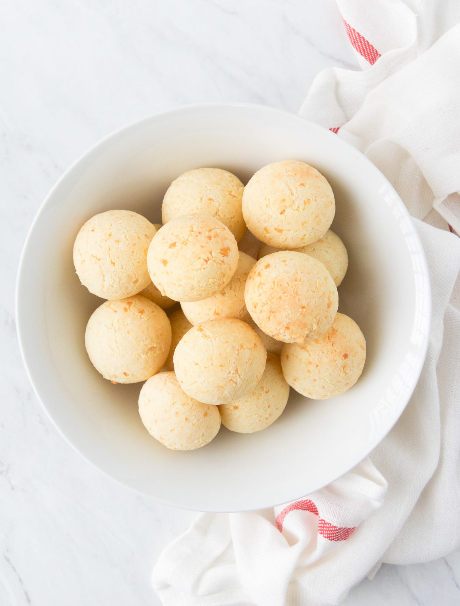

Description
This typical Brazilian snack is lightly crunchy on the outside, soft and chewy on the inside, and has a cheese flavor that just hugs your mouth.
Ingredients
- 1 cup grated Parmesan cheese
- 1 10oz round of Queso Fresco, crumbled
- 1 cup full fat milk
- 1/4 cup vegetable oil for oiling your hands
- 2 eggs
- 1 lb tapioca flour also known as tapioca starch
- 2 tsp kosher salt
Instructions
- 2 tsp kosher salt
- Add the tapioca flour and the salt to a large bowl, whisk to combine and set aside.
- In a medium bowl, combine the cheeses and the eggs and set aside.
- Add the milk and the oil to a small saucepan and bring to a simmer on stove top over medium heat
- When the liquid simmers, remove the pan from heat, and immediately pour the hot liquid into the tapioca mixture and using a wooden spoon, stir to combine – the mixture will not be homogeneous, it'll be gummy and clumpy. See step by step images above for reference.
- Wait 5-10 minutes until the tapioca mixture is cool to touch, and only then add the cheese and egg mixture to the tapioca mixture. Mix with a wooden spoon, or your hands to combine. Now you should have a homogeneous mixture and it should come together as a ball. You'll still see some white tapioca specks in the dough – don't worry, that's totally normal!
Roll the balls
- Oil your hands, then scoop a Tbsp to 2Tbsp size portions, roll them into balls, and arrange them in a baking sheet approximately 2" apart from one another.
- Bake until golden brown, approximately 30-35 minutes.
Return to home